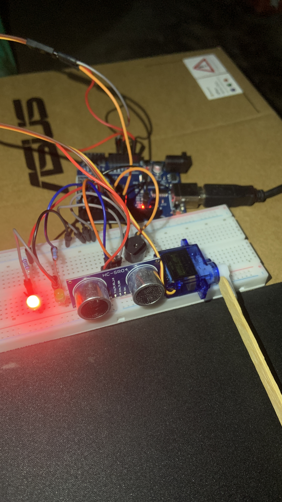

Panduan DIY: Palang Parkir Otomatis & Counter Kendaraan (Serial Monitor)
Pelajari cara membuat sistem palang pintu parkir otomatis menggunakan sensor ultrasonik HC-SR04, Servo SG90, LED dual-indikator, serta buzzer. Tanpa komponen rumit, pencatatan kendaraan dipantau langsung via Serial Monitor!

Prototipe sistem palang parkir pintar berbasis sensor ultrasonik dan motor servo.
Konsep & Cara Kerja Sistem
Sistem palang parkir ini menggunakan Arduino Uno sebagai otak utama untuk mengontrol pergerakan palang berdasarkan pembacaan jarak objek:
Sensor Ultrasonik membaca jarak objek di depan gerbang. Jika terdeteksi jarak 2 - 10 cm, sistem aktif.
LED beralih ke hijau, buzzer berbunyi singkat (0,5 dtk), dan Servo memutar palang ke 14° selama 3 detik.
Palang menutup kembali ke 140°, LED merah menyala, dan data total mobil diperbarui di Serial Monitor.
Indikator Status Gerbang:
Alat & Bahan yang Dibutuhkan
Skema Wiring Detail & Pinout Arduino
| Nama Komponen | Pin Komponen | Keterangan Jalur / Fungsi Pin | Pin Arduino Uno |
|---|---|---|---|
| HC-SR04 (Ultrasonik) | VCC | Daya Positif (+5V) | 5V |
| GND | Daya Negatif / Ground (-) | GND | |
| Trig | Pin Pemicu Signal (Trigger) | Pin D2 | |
| Echo | Pin Penerima Pantulan Signal | Pin D3 | |
| LED Merah | Anoda (+) | Positif — Seri dengan Resistor 220Ω | Pin D4 |
| Katoda (-) | Negatif (Kaki Pendek) | GND | |
| LED Hijau | Anoda (+) | Positif — Seri dengan Resistor 220Ω | Pin D5 |
| Katoda (-) | Negatif (Kaki Pendek) | GND | |
| Buzzer | Positif (+) | Pin Data & Control Suara (Kaki Panjang) | Pin D6 |
| Negatif (-) | Ground (Kaki Pendek) | GND | |
| Servo Motor (SG90) | VCC (Merah) | Daya Positif (+5V) | 5V |
| GND (Cokelat/Hitam) | Daya Negatif / Ground (-) | GND | |
| Signal (Kuning/Orange) | Jalur Kontrol PWM Servo | Pin D9 |
Arduino Source Code (C++)
#include <Servo.h>
Servo palangServo;
const int trigPin = 2;
const int echoPin = 3;
const int ledMerah = 4;
const int ledHijau = 5;
const int buzzerPin = 6;
long duration;
int distance;
unsigned long waktuMulaiBuka = 0;
int totalMobilLewat = 0;
void printTimestamp() {
unsigned long totalDetik = millis() / 1000;
int detik = totalDetik % 60;
int menit = (totalDetik / 60) % 60;
int jam = (totalDetik / 3600) % 24;
Serial.print("[");
if (jam < 10) Serial.print("0");
Serial.print(jam);
Serial.print(":");
if (menit < 10) Serial.print("0");
Serial.print(menit);
Serial.print(":");
if (detik < 10) Serial.print("0");
Serial.print(detik);
Serial.print("] ");
}
void printWaktuBerjalan() {
unsigned long totalDetik = millis() / 1000;
int detik = totalDetik % 60;
int menit = (totalDetik / 60) % 60;
int jam = (totalDetik / 3600) % 24;
if (jam < 10) Serial.print("0");
Serial.print(jam);
Serial.print(":");
if (menit < 10) Serial.print("0");
Serial.print(menit);
Serial.print(":");
if (detik < 10) Serial.print("0");
Serial.println(detik);
}
void setup() {
pinMode(trigPin, OUTPUT);
pinMode(echoPin, INPUT);
pinMode(ledMerah, OUTPUT);
pinMode(ledHijau, OUTPUT);
pinMode(buzzerPin, OUTPUT);
palangServo.attach(9);
palangServo.write(140); // Posisi awal tertutup (140 derajat)
digitalWrite(ledMerah, HIGH);
digitalWrite(ledHijau, LOW);
digitalWrite(buzzerPin, LOW);
Serial.begin(9600);
Serial.println("=============================================================");
Serial.println(" SISTEM PALANG PARKIR OTOMATIS SIAP ");
Serial.println("=============================================================\n");
}
void loop() {
// BACA SENSOR ULTRASONIK
digitalWrite(trigPin, LOW);
delayMicroseconds(2);
digitalWrite(trigPin, HIGH);
delayMicroseconds(10);
digitalWrite(trigPin, LOW);
duration = pulseIn(echoPin, HIGH);
distance = duration * 0.034 / 2;
// CEK OBJEK MENDEKAT (JARAK KURANG DARI 10 CM)
if (distance >= 2 && distance <= 10) {
waktuMulaiBuka = millis();
// 1. PALANG MEMBUKA
digitalWrite(ledMerah, LOW);
digitalWrite(ledHijau, HIGH);
palangServo.write(14); // Buka gerbang ke 14 derajat
// LOG SERIAL MONITOR: PALANG TERBUKA
Serial.println("=============================================================");
printTimestamp();
Serial.println("PALANG TERBUKA");
Serial.print(" > Jarak terdeteksi : ");
Serial.print(distance);
Serial.println(" cm");
Serial.println(" > Status : Kendaraan terdeteksi, silakan masuk");
Serial.println("=============================================================");
// 2. BUNYI BUZZER (500 ms)
digitalWrite(buzzerPin, HIGH);
delay(500);
digitalWrite(buzzerPin, LOW);
// 3. TAHAN GERBANG TERBUKA (3 Detik)
delay(3000);
// 4. PALANG MENUTUP
palangServo.write(140); // Tutup gerbang ke 140 derajat
digitalWrite(ledHijau, LOW);
digitalWrite(ledMerah, HIGH);
totalMobilLewat++; // Tambah counter mobil
float waktuProses = (millis() - waktuMulaiBuka) / 1000.0;
// LOG SERIAL MONITOR: PALANG TERTUTUP
printTimestamp();
Serial.println("PALANG TERTUTUP");
Serial.println(" > Status : Kendaraan telah lewat");
Serial.print(" > Waktu proses : ");
Serial.print(waktuProses, 1);
Serial.println(" detik");
Serial.print(" > Total mobil lewat : ");
Serial.println(totalMobilLewat);
Serial.print(" > Waktu berjalan : ");
printWaktuBerjalan();
Serial.println("=============================================================\n");
// Jeda Pengaman 2 Detik sebelum siap mendeteksi objek berikutnya
delay(2000);
}
}Cara Upload ke Arduino
- Pastikan library bawaan Servo sudah tersedia di Arduino IDE kamu.
- Salin kode C++ di atas dan tempelkan ke software Arduino IDE.
- Hubungkan board Arduino Uno menggunakan kabel USB.
- Pilih Board:
Tools ➔ Board ➔ Arduino AVR Boards ➔ Arduino Uno. - Pilih Port:
Tools ➔ Port ➔ (Port USB Arduino kamu). - Klik tombol Upload (ikon panah kanan).
- Buka Serial Monitor (Ctrl + Shift + M) dan atur baudrate ke
9600untuk memantau waktu serta jumlah kendaraan secara real-time!